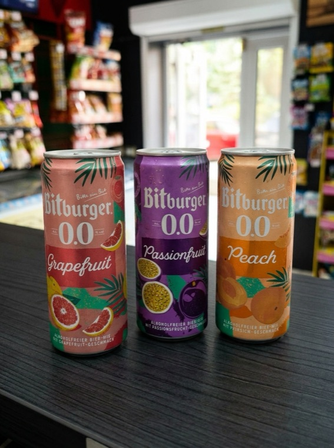

German Alcohol-Free Fruit Radler (0.0%) · CHIȘINĂU
Bitburger 0.0% (Grapefruit · Piersică · Fructul pasiunii)
Produsă în Germania de renumita berărie Bitburger, gama Bitburger 0.0% combină berea germană complet fără alcool (0.0% ABV) cu suc natural de fructe pentru un gust ultra-răcoritor.

Fișă tehnică & profil de gust
- Origine
- Bitburger Braugruppe · Germania
- Stil
- German Alcohol-Free Fruit Radler (0.0%)
- Alcool / Amăreală
- 0,0% · 10 IBU
- Temperatură servire
- 4–6 °C
- Preț referință
- la cerere
Aromă: Arome naturale, proaspete de grapefruit roz, piersică coaptă sau fructul pasiunii.
Gust: Echilibru revigorant între prospețimea citrică-fructată și nota discretă de bere germană, fără alcool și cu efect izotonic.
Cu ce gustări merge la GYM BEER: Ideală pentru șoferi, zile calde sau alături de creveți și gustări ușoare.
Conține Bitburger 0.0% urme de alcool?
Nu — este certificată 0.0% alcool, fiind sigură și pentru șoferi.
Cum verific disponibilitatea azi?
Sună la +373 69 482 293 sau vino zilnic între 10:00 și 22:00 în Botanica sau Buiucani.
Alte produse populare din meniu: HOLZ Munich Helles · HOLZ IPA · HOLZ Weissbier · Kozel Světlý · Corona Extra